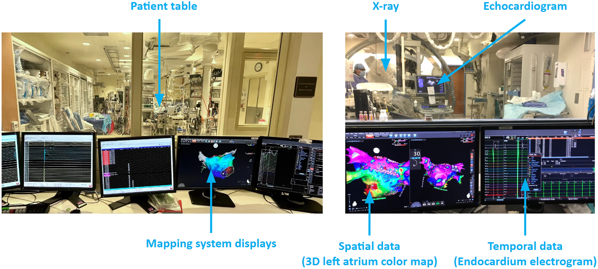

Atrial fibrillation ablation challenges Background knowledge of left atrium arrhythmia, catheter ablation surgery, and atrial arrhythmia ablation challenges. More details: please click here. |
Myocardial fiber effects on arrhythmia activation patternsMyocardial fiber data is not available for clinical arrhythmia ablation. We would like to find a way to compensate for the lack of fiber data. To do that, we need to first learn the effects of fiber on activation patterns. More details: please click here. |
Patient-specific heart modeling for arrhythmia ablationExplain the heart model equations, derive the discrete form the heart model equations for programming, show arrhythmia simulation examples, patient-specific parameter tuning, and validation with patient data. More details: please click here. |
Clinical data processing and arrhythmia source detectionDescribe the tools, user interfaces, and algorithms we developed for processing clinical data. More details: please click here. |